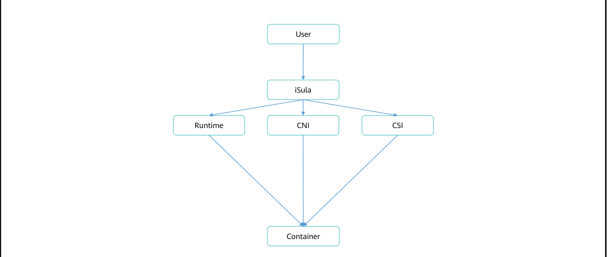
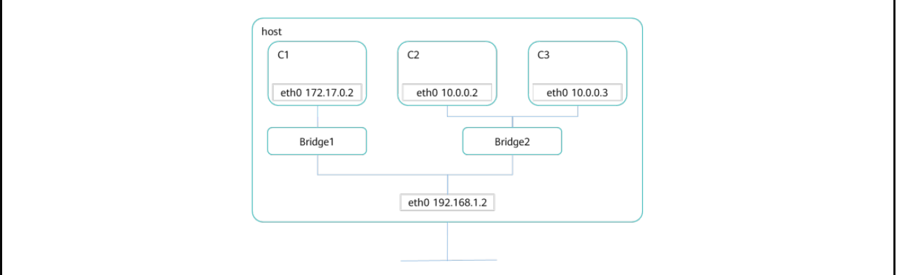

-v)iSulad integrates with Container Network Interface (CNI) plugins and configure CNI in /etc/isulad/daemon.jsonbridge, portmap, firewall) and manage networks via isula network create/ls/inspect and --netisula run -v /host:/container[:rw|:ro]iSulad Implements Container Networking with CNIUser -> iSula -> Runtime (LCR by default) / CNI / CSI -> Container.iSulad does not bundle a built-in network stack, it uses CNI (Container Network Interface) binary plugins (v0.9.0+ recommended, v1.3.0 available from github.com/containernetworking/plugins).iSula only supports the bridge mode (Ch.07, p.420), where containers connected to the same Linux bridge communicate directly with each other and with the host./etc/isulad/daemon.json (Ch.07, p.422):"network-plugin": "cni" (can be set to cni or left empty by default)."cni-bin-dir": "/opt/cni/bin" (default directory storing compiled CNI plugin binaries)."cni-conf-dir": "/etc/cni/net.d" (default directory storing CNI network configuration files).
---
isula network CommandsWhen you create a bridge network in iSula, three CNI plugins work together (Ch.07, p.423):
bridge plugin: Creates a Linux bridge device, connects container virtual NICs to the bridge, and assigns IP addresses via the host-local IPAM plugin.portmap plugin: Implements NAT port forwarding between container ports and host ports.firewall plugin: Uses iptables to control ingress/egress container traffic and enforce port-mapping security rules. isula network create cni0
isula network ls
isula network inspect cni0
isula run --net cni0 -d -it isulad/busybox sleep 99d
---
-v Host Bind Mounts & SCI)By default, modifications inside a container are written only to its temporary read/write container layer and are lost when the container is deleted!
-v).-v on isula create or isula run): isula run -it -n storage \
-v /root/test1.txt:/tmp/test1.txt:rw \
-v /root/test2.txt:/tmp/test2.txt:ro \
oepkgs/test/nginx:latest /bin/bashrw (Default): Container has read-write permission on the mounted host file/directory.ro: Container has read-only permission (writing inside the container returns Read-only file system).